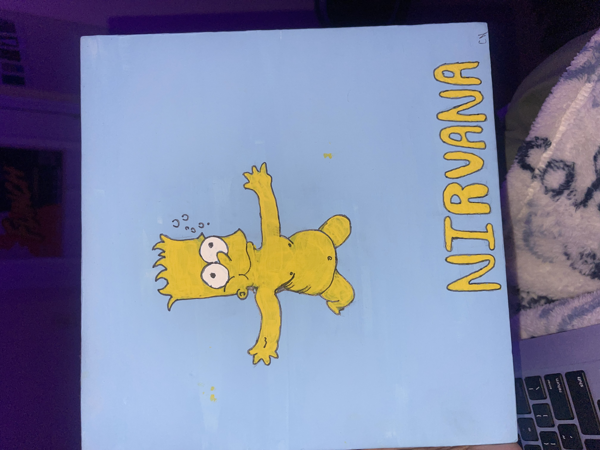
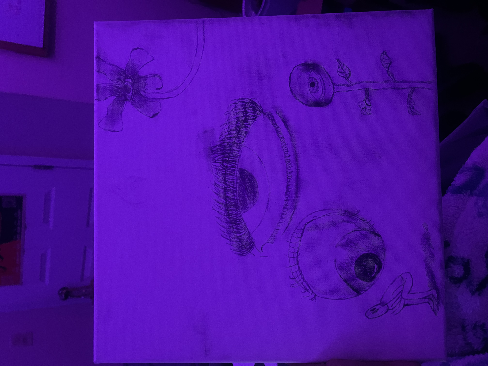
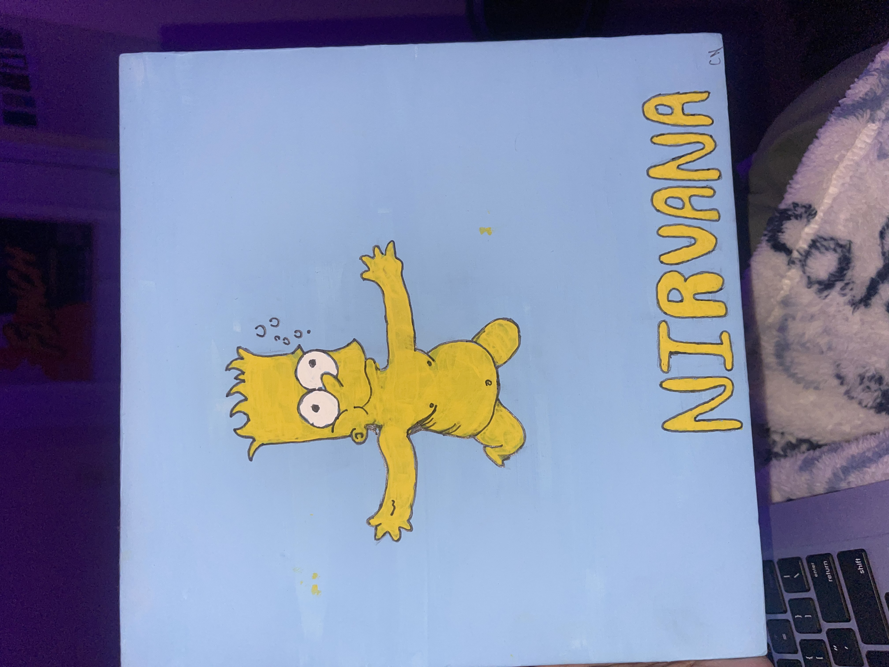
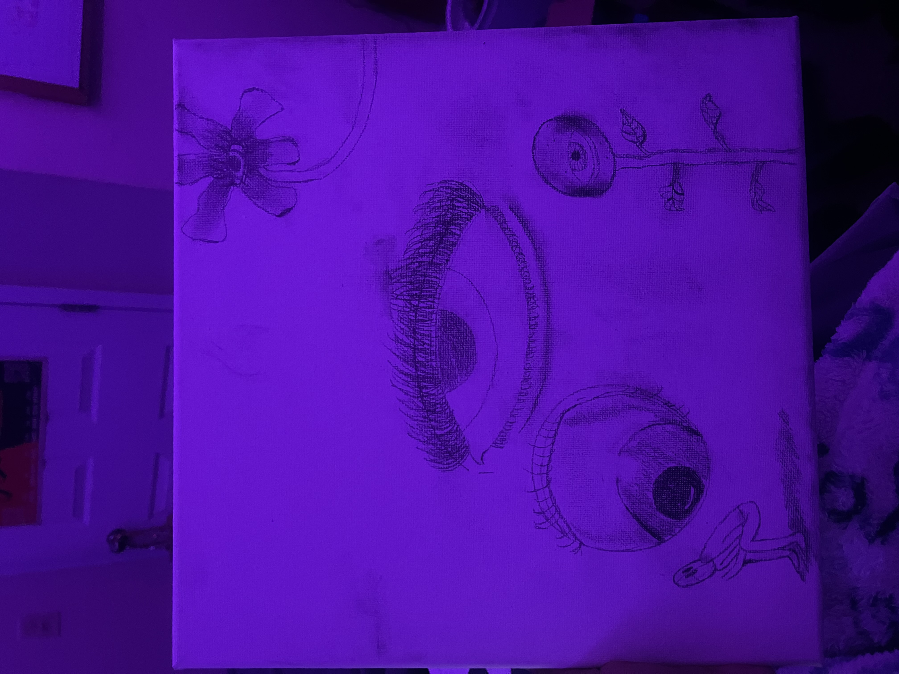

Growing up I’ve always loved to doodle on all my papers. As time went on I started to expand my knowledge about art and tried different art forms. I have taken all kinds of classes such as ceramics, dance, painting, photography, abstract, op, etc. Even though I’ve tried many different art forms I always fall back on painting and ceramics. They are my favorite things to do when I need to decompress and escape reality. They offer a pure form of expression, a release from the burdens of overthinking, and an invitation to experience the moment in its most uncomplicated form.

 



Check out my resume!